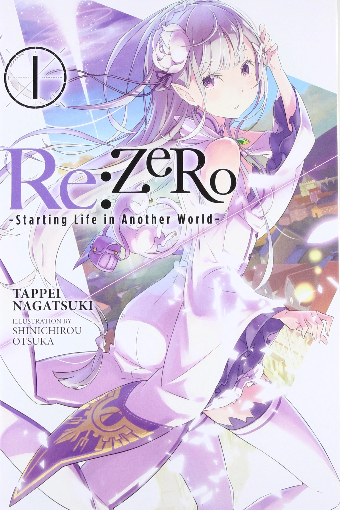

Aprofunde-se no Universo de Lugunica com Nossas Curiosidades Exclusivas sobre Personagens e Eventos!
| Re:Zero kara Hajimeru Isekai Seikatsu | |
|---|---|
| Re:ゼロから始める異世界生活 | |
|  Capa do primeiro volume da light novel, com a personagem Emilia. | |
| Informações gerais | |
| Gêneros |
Ação Aventura Fantasia Romance Drama |
Adentre o fascinante universo de "Re:Zero kara Hajimeru Isekai Seikatsu," uma envolvente série de light novel criada por Tappei Nagatsuki e visualmente enriquecida por Shinichirou Otsuka. A trama orbita em torno de Subaru Natsuki, um hikikomori transportado para um reino enigmático. Com início em 2012 no website Shōsetsuka ni Narō, a saga desdobrou-se ao longo de 35 volumes sob a chancela da Media Factory.
Os cativantes arcos iniciais foram imortalizados em séries de mangá distintas, cada uma oferecendo uma perspectiva única. A adaptação animada pela White Fox, transmitida inicialmente em 2016, deu origem a OVAs e, mais recentemente, a uma emocionante segunda temporada em 2020 e 2021. Licenciada pela editora New POP no Brasil, a série mantém seu apelo global, com a Crunchyroll sendo o epicentro para espectadores ávidos fora da Ásia. Embarque nesta jornada épica onde cada página revela segredos e desafios inimagináveis.
Em meio às teias entrelaçadas do tempo e do destino, surge um dos elementos mais intrigantes de Re:Zero - o extraordinário poder de "Retorno pela Morte". Embarquemos em uma jornada fascinante pelos mistérios desse fenômeno, desvendando seus segredos e explorando as múltiplas facetas que adicionam uma complexidade única à narrativa.
Subaru Natsuki, nosso protagonista, é dotado desse poder misterioso que o permite retroceder no tempo toda vez que encontra a morte em seu caminho. Esta habilidade peculiar não apenas desafia as leis da natureza, mas também abre portas para uma série de rotas alternativas na trama, desencadeando uma verdadeira tapeçaria de possibilidades.
Cada morte de Subaru não é apenas um fim trágico, mas sim um portal para realidades alternativas, cada uma com seus próprios desdobramentos e desafios únicos. Estas iterações revelam não apenas a resiliência de Subaru, mas também oferecem uma visão mais profunda de Lugunica e seus habitantes.
As consequências do "Retorno pela Morte" não se limitam apenas ao enredo. A cada ressurreição, testemunhamos um desenvolvimento dinâmico do personagem principal. Lições valiosas são aprendidas, ciclos são quebrados, e Subaru emerge como um herói complexo, forjado nas chamas do destino.
No entanto, o futuro permanece incerto para Subaru, e essa incerteza se estende aos espectadores. A habilidade de antecipar eventos futuros, aliada às escolhas intrincadas de Subaru, cria uma atmosfera de suspense, tornando cada episódio uma jornada imprevisível.
As relações sociais no mundo de Lugunica também sofrem metamorfoses, moldadas pelas escolhas de Subaru. Amizades são forjadas, alianças se desfazem, e o tecido social se rearranja a cada "Retorno pela Morte". A narrativa, portanto, não é apenas uma epopeia individual, mas um intricado jogo de influências sociais.
Ao explorar os paradoxos temporais e as complexidades filosóficas introduzidas por esse poder, Re:Zero transcende os limites da narrativa convencional. As reviravoltas inesperadas, os conflitos dinâmicos e as alianças imprevisíveis mantêm os espectadores à beira de seus assentos, ansiosos para desvendar o próximo capítulo.
Assim, o "Retorno pela Morte" não é apenas uma peculiaridade na história de Subaru, mas uma peça central que envolve os fãs de Re:Zero em uma narrativa interativa. Cada morte, cada escolha, cada reviravolta é mais uma camada adicionada a essa obra-prima da fantasia moderna. Prepare-se para mergulhar nos enigmas de "Re:Zero", onde o tempo é uma variável e o destino, uma página constantemente reescrita.
À medida que nos aprofundamos na trama complexa de Re:Zero, descobrimos que o "Retorno pela Morte" não apenas ressuscita Subaru, mas também desenha um intricado labirinto de rotas alternativas, cada uma moldada pelas decisões cruciais do protagonista. Essas escolhas não só alteram o curso da história, mas proporcionam vislumbres fascinantes de realidades paralelas.
Uma das rotas alternativas mais notáveis é a chamada "Rota da Preguiça". Nesse desdobramento, Subaru, em um ato de fuga desesperada, decide abandonar as responsabilidades e desafios que o aguardam em Lugunica, optando por uma vida tranquila com Rem. Essa escolha não apenas redefine o destino de Subaru, mas também lança luz sobre o que poderia ter sido, explorando as complexidades das relações entre os personagens.
Outra trilha intrigante é a "Rota da Avareza". Nela, Subaru faz um pacto com a bruxa Echidna, aceitando termos misteriosos que prometem poder e conhecimento. Essa rota mergulha Subaru em uma jornada ainda mais obscura, desvendando segredos ocultos e desafios inimagináveis. O contrato com Echidna, a Bruxa da Avareza, não apenas testa a coragem de Subaru, mas também revela nuances mais profundas do universo de Re:Zero.
Essas rotas alternativas não são apenas digressões narrativas, mas partes intrínsecas do tecido da história. Elas exploram o "E se..." que paira sobre as escolhas de Subaru, oferecendo aos fãs uma visão única de diferentes destinos possíveis. Cada rota, cada escolha, tece uma narrativa única, proporcionando uma experiência envolvente e imprevisível.
Ao contemplar essas rotas, somos lembrados de que, em Re:Zero, as escolhas não são apenas bifurcações na trama, mas fios entrelaçados que formam uma tapeçaria única. A incerteza do que poderia ter sido adiciona camadas adicionais de suspense, convidando os espectadores a explorar não apenas o enredo principal, mas também as ramificações fascinantes dessas escolhas cruciais.
Portanto, prepare-se para se perder nas complexidades das rotas alternativas de Re:Zero, onde cada escolha é uma encruzilhada e cada caminho é uma jornada única. Neste mundo de magia e mistério, as escolhas de Subaru ecoam através do tempo, moldando não apenas seu destino, mas o destino de todo o universo de Lugunica.
Na intricada teia de possibilidades que é "Re:Zero", a Rota da Preguiça destaca-se como uma jornada alternativa que diverge significativamente da narrativa principal. Nesta trilha peculiar, Subaru Natsuki faz uma escolha audaciosa e, em vez de enfrentar os desafios complexos de Lugunica, decide buscar uma vida de tranquilidade ao lado de Rem.
Essa rota se desdobra quando Subaru, sobrecarregado pelas adversidades e pelo fardo de seus "Retornos pela Morte", decide abandonar as responsabilidades e se refugiar em uma existência mais pacífica. Optando por uma vida afastada das intrigas políticas, confrontos sobrenaturais e, em especial, da pressão constante de sua habilidade única, Subaru faz uma escolha que redefine seu destino e o mundo ao seu redor.
Ao escolher a Rota da Preguiça, Subaru mergulha em uma narrativa que explora os laços emocionais entre ele e Rem. Essa escolha proporciona uma visão mais íntima da dinâmica entre os personagens, revelando camadas mais profundas de suas personalidades e desejos. A relação entre Subaru e Rem é posta à prova de maneiras inesperadas, e os desafios da vida cotidiana trazem à tona novas facetas de seus personagens.
Ao longo dessa jornada alternativa, o foco muda de eventos épicos para o cotidiano, proporcionando uma mudança de ritmo significativa. A Rota da Preguiça destaca a habilidade dos criadores de Re:Zero em tecer narrativas envolventes, independentemente do caminho escolhido. Cada decisão de Subaru, seja enfrentar os perigos iminentes ou buscar uma vida mais simples, adiciona uma camada única à rica tapeçaria da história.
Contudo, como todas as escolhas em Re:Zero, a Rota da Preguiça não está isenta de desafios e consequências. O sossego aparente esconde dilemas próprios, e Subaru é confrontado com questões existenciais que transcendem a serenidade superficial. A jornada pela paz pode se tornar, paradoxalmente, uma busca por significado e propósito.
Assim, ao mergulhar na Rota da Preguiça, os fãs de Re:Zero são levados a uma exploração fascinante de um "E se..." que molda não apenas o destino de Subaru, mas também a textura emocional do universo que o envolve. Em um reino onde cada escolha reverbera através do tempo, a Rota da Preguiça destaca que, mesmo em busca de serenidade, o protagonista não pode escapar completamente do tecido intricado do destino.
Na complexidade de "Re:Zero", a Rota da Avareza oferece uma narrativa intrigante, conduzindo Subaru Natsuki por um caminho onde pactos sombrios e a busca pelo poder se entrelaçam perigosamente. Nessa jornada alternativa, o protagonista se vê diante de escolhas que transcendem os desafios do mundo de Lugunica, adentrando os recônditos mais sombrios de sua própria existência.
A Rota da Avareza se desenrola quando Subaru, confrontado por circunstâncias únicas e propostas tentadoras, decide aceitar um contrato com Echidna, a Bruxa da Avareza. Essa escolha não apenas altera o curso da história, mas mergulha o protagonista em uma teia de intrigas onde a sede por conhecimento e poder se torna uma força irresistível.
Ao longo dessa narrativa, a relação entre Subaru e Echidna se desenvolve de maneira complexa. A Bruxa, conhecida por seu domínio sobre ilusões e desafios mentais, oferece a Subaru não apenas respostas para seus questionamentos, mas também um entendimento mais profundo do mundo que o cerca. No entanto, essa parceria está longe de ser benevolente, e cada revelação tem um preço.
A Rota da Avareza não apenas explora o confronto de Subaru com forças sobrenaturais, mas também destaca a fragilidade de suas próprias convicções e a constante luta entre a necessidade de conhecimento e os perigos inerentes a ele. A busca pelo poder, quando guiada pela avareza, se torna um terreno traiçoeiro, onde alianças podem se desfazer tão rapidamente quanto são formadas.
Nesse enredo, Lugunica se revela não apenas como um reino de fantasia, mas como um palco para os dilemas morais e as escolhas desafiadoras de Subaru. A Rota da Avareza, ao mergulhar nos meandros da ganância e do desejo por entendimento, questiona não apenas o protagonista, mas também os fundamentos éticos do universo em que ele está inserido.
Conforme Subaru se envolve em um jogo de poder e intrigas, a linha entre aliados e inimigos se torna tênue, e a Bruxa da Avareza revela-se uma mentora ambígua. Cada passo nessa jornada alternativa leva não apenas a revelações impactantes, mas a uma compreensão mais profunda das complexidades que moldam o destino de Subaru.
Assim, a Rota da Avareza em "Re:Zero" não é apenas um desvio na trama, mas uma exploração profunda da psicologia do protagonista e das forças obscuras que permeiam a narrativa. Confrontando a avareza em suas várias formas, Subaru Natsuki enfrenta não apenas o desconhecido, mas as sombras de seus próprios anseios em uma jornada que transcende as fronteiras do convencional.
Na complexa tapeçaria de "Re:Zero", a Rota da Gula oferece uma narrativa alternativa, desviando-se das trilhas convencionais e conduzindo Subaru Natsuki por um caminho onde os anseios e desejos desempenham papéis centrais. Nesta jornada única, Subaru é tentado por ofertas sedutoras, confrontando não apenas os perigos do mundo de Lugunica, mas também as profundezas de sua própria alma.
A Rota da Gula se desenrola quando Subaru, em meio a desafios e escolhas difíceis, decide ceder a tentações irresistíveis. Essa escolha o conduz a um caminho menos percorrido, onde o apetite por poder, conhecimento ou mesmo indulgências pessoais desempenha um papel crucial em sua jornada. O protagonista, normalmente marcado por sua tenacidade diante do "Retorno pela Morte", agora enfrenta dilemas mais íntimos e intrincados.
Nesse enredo alternativo, a exploração das fraquezas humanas e dos impulsos muitas vezes reprimidos ganha destaque. Subaru, ao se render à gula, é confrontado não apenas por ameaças externas, mas pelos fantasmas de seus próprios desejos. A trama se desdobra em meio a negociações perigosas, alianças instáveis e a constante tentação de buscar mais, desafiando as fronteiras morais e éticas do protagonista.
A Rota da Gula não apenas mergulha nas profundezas psicológicas de Subaru, mas também destaca a natureza fluida da moralidade em Lugunica. Personagens secundários, antes aliados confiáveis, podem se revelar adversários ou vice-versa, enquanto as alianças se desfazem e se reconstroem com base nos caprichos dos desejos individuais.
Essa narrativa oferece não apenas uma visão alternativa da história, mas também questiona a própria natureza da busca do protagonista. A gula, seja por conhecimento proibido, poder sobrenatural ou mesmo por paixões efêmeras, molda não apenas o destino de Subaru, mas também o mundo ao seu redor.
No entanto, como em todas as rotas de "Re:Zero", a Rota da Gula não está isenta de desafios e consequências. Cada escolha tem um preço, e Subaru é forçado a confrontar não apenas as ameaças externas, mas as sombras de sua própria ganância. Assim, essa jornada alternativa se torna não apenas um desvio na narrativa, mas uma exploração profunda da psique do protagonista e das complexidades morais que permeiam o universo de "Re:Zero".